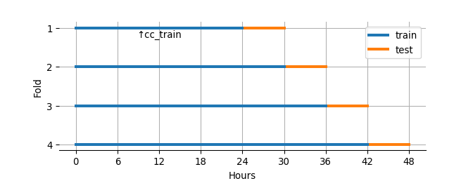
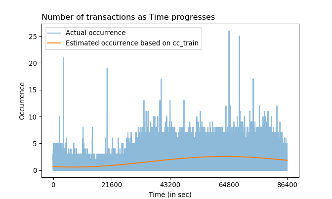
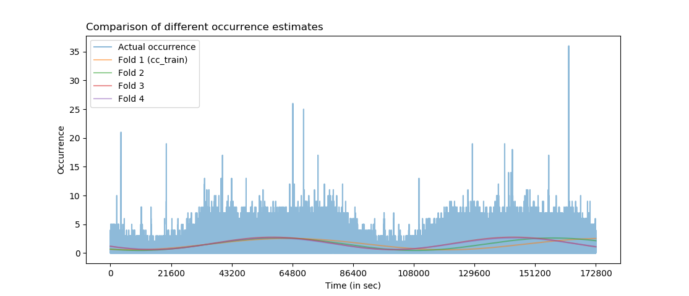
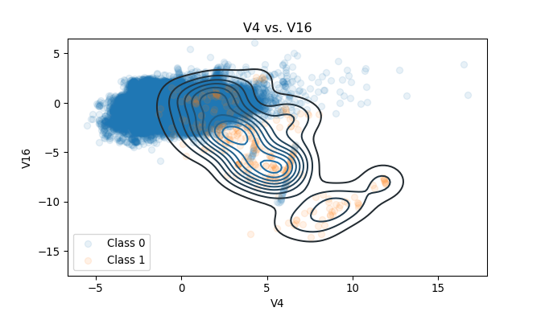
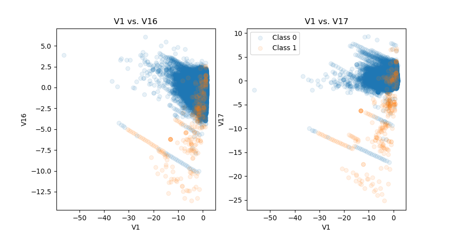

Three Python scripts are required to reproduce the analysis:
- the script that loads dataset, and produces figures and tables
- the script where functions used in the analysis are stored
- the script that produces models and classification results
1. Summary
Logistic regression is initially used to classify fraudulent transactions in creditcard dataset and to define binary classifiers. Also, to increase the overall accuracy of classification by diversifying thresholds, the “compounded model” is designed and then compared to the vanilla logistic regression. The compounded model first uses multinomial logistic regression to predict the outcome of binary classification into TPN (true positive or negative), FP (false positive), and FN (false negative), and then applies different probability thresholds for each expected outcome to classify an observation as fraudulent or non-fraudulent. Regardless of the choice of binary classifier, the compounded model achieves a higher accuracy in both training and test sets due to an improved performance in detecting non-fraudulent transactions. However, the true positive rate is lowered mainly due to a rarity of fraudulent cases in the original dataset.
2. Analysis
Pre-existing features of the dataset are explored to conduct feature selection and, if applicable, transformations. After exploration, a few plausible logistic regression models and then corresponding “compounded” models, i.e. models that perform ternary classification for each observation and then apply different probability thresholds for binary classification, are fitted.
2.1. Features
The data consists of the response Class, 2 features Time and Amount, and 28 principal components. No missing data is present.
Classis the response: 1 in case of fraud and 0 otherwise.Timecontains the seconds elapsed between each transaction and the first transaction in the dataset. The maximumTimeofcreditcarddata is 172792 seconds, indicating that the data amounts to 48 hours minus 8 seconds worth.Amountis the transaction amount.- Columns that start with
Vare principal components.
2.1.1. Time
Due to the ordered structure of creditcard by Time, the following 4 train-test combinations are used for model fitting and evaluation:
- the first 24 hours and the following 6 hours of data as training and test sets respectively
- the first 30 hours and the following 6 hours
- the first 36 hours and the following 6 hours
- the first 42 hours and the following 6 hours
cc_train, the first 24 hours worth of data (i.e. the training data in the first fold), is selected as a representative of training datasets.

Not every observation in cc_train has the unique Time value, indicating that some Time occurs more often than the other. The number of occurrence of each Time in cc_train is precisely the number of transactions at that Time. Fast Fourier transform is used to fit a sine function (call it fitted_func) that estimates the Occurrence of Time and to check the Time trend:

The occurrence estimate gets better as the size of training set increases. Time occurrence of the entire creditcard dataset is plotted along with fitted curves of each fold. Bumps and valleys of the Time occurrence match for fold 3 and 4 throughout Time, but not so much for fold 1 (cc_train) and fold 2 after about 100,800. Also, the lines of fold 3 and fold 4 are almost identical, indicating that the size of training set is irrelevant after the size gets sufficiently large when it comes to estimating periodicity.

Distributions of the Occurrence estimates based on cc_train are visualized for each Class to see whether they draw different density estimations. KDE plots with bandwidth 0.075 show that there are three dominant peaks in each cycle of fraudulent transactions (i.e. Class 1): near minimum, near 1.9, and near maximum. Non-fraudulent transactions (Class 0) have a high peak near maximum and a lower peak near minimum.
The reason for not using Occurrence as-is is because the purpose of the model is to classify inputs of any number of observations. For example, if a single observation is given to a model, then it won’t be able to compute the appropriate Occurrence from a given Time since Occurrence is the count of repeating Times in a data.
The vast majority (95.018%) of fraudulent transactions in cc_train occur one at a time. 4 fraudulent transactions occur all at once at two different moments in Time; at one Time alone, there are 6 fraudulent transactions.
If a large proportion of fraudulent transactions have occurred multiple times at many fixed points in Time, then Occurrence and its estimate may have had given “more weights” in the model fitting process as detecting at least one Time point of fraud will lead to more cases of fraud. Unfortunately, that doesn’t seem like the case.
2.1.2. Amount
Amount is heavily right-skewed regardless of the Class. Also, minimums of both Classes are 0.0, indicating there are transactions with no money transfer and yet recorded as transactions anyway. The minimum of 0 also means that there are no observations having negative amounts, i.e. observations that would have meant cases like cancellation or refund:
## Amount
## count mean std min 25% 50% 75% max
## Class
## 0 144506.0 90.382402 245.912264 0.0 5.99 23.40 80.00 19656.53
## 1 281.0 118.288648 242.249762 0.0 1.00 9.99 104.81 1809.68The description of creditcard does not say whether the Amount is 0 because of:
- the prices actually being 0
- the request made by a credit card user (such as a fraud report or cancellation)
- the financial institution blocking the transaction (i.e. the actual
Amountis not 0, but is set to 0 by the decision of the institution) - the mixture of all of the above
If the Amount is 0 NOT because of the first case, it doesn’t quite make sense to use Amount in the model fitting process. This is because in either of these cases, the original Amount would not have been 0. The cardholder would have noticed the nonzero-Amount transaction he or she didn’t make; the institution would probably have made the decision with the nonzero Amount along with other values of features. Also, the model is about detecting the fraud BEFORE it gets reported from a cardholder, not after.
In this analysis, however, the entire observations are utilized including those with Amount 0 because the description states that the “transaction Amount … can be used for example-dependant cost-sensitive learning”, implying this is a legitimate feature for a modeling.
## Class
## 0 937
## 1 11
## dtype: int64A proportion of transactions with no money transfer in each Class is checked. Out of 144506 non-fraudulent transactions, there are 937 transactions with the involved Amount 0 (which accounts 0.648% of the entire non-fraudulent transactions), and 11 transactions out of all 281 fraudulent cases (3.915%). That is:
- the probability of a transaction having
Amount0 is 0.655%. - the probability of a transaction being fraud given the
Amountis 0 is 1.16%.
Distributions of log-transformed Amount in each Class are also checked. Log-transformation is applied due to a heavy right-skewness; 1 is added to Amount and then transformed in order to ensure observations with Amount 0 to be evaluated as 0 and not -inf.
Three peaks are present in case of fraudulent cases. One of them is at 0, in which we know that the estimated probability of a transaction being fraud given the Amount is 0 is 1.16%. The other two draws a higher peak, indicating there are more fraudulent transactions at those Amounts than at the Amount 0. Estimating those two remaining modes using the HSM method yields values 0.6931472 and 4.6150215. In actual dollar Amount, these are 1 and 99.99 respectively.
From these modes, the probability of a transaction being fraud given that:
- the
Amountis 1 is computed as 1.153% - the
Amountis 99.99 is computed as 11.25% - the
Amountis either 0, 1, or 99.99 is computed as 1.442%
Also, out of all fraudulent transactions in cc_train, the probability of:
- the involved
Amountis 0 is 3.915%. - the involved
Amountis 1 is 29.537%. - the involved
Amountis 99.99 is 9.609%. - the involved
Amountis either 0, 1, or 99.99 is 43.06%
In other words, 43.06% of all fraudulent transactions in cc_train involve the Amount of either 0, 1, or 99.99.
## Amount 0.00 1.00 99.99
## Class
## 0 937 7118 213
## 1 11 83 27The above table shows counts of each cell (Class, Amount).
2.1.3. PCs
Assuming all principal components of selected features are present in the original creditcard dataset (i.e. the 28th PC is indeed the last PC), the first PC explains around 12.484% of the total variance in features. This means no PCs in creditcard is dominant when it comes to explaining variances of transformed features.
Distributions of numeric values for each Class in each PC of cc_train are checked. It is observed that some PCs have a somewhat clearer distinction between Classes than other PCs; explaining more variance in the data (i.e. PCs with low numberings like 1 or 2) doesn’t necessarily give a clear separation of Class.

2.1.4. Relationships among PCs
Scatterplots of PC pairs in cc_train are investigated. Every PC except V13 and V15 is considered because not only a separation of two Classes within each PC is vague, but also any pairwise interaction with these two PCs yields an almost entirely encompassed cluster of Class 1s within the cluster of Class 0s. The chosen 26 PCs, from V1 to V28 except V13 and V15, then explains 94.051% of the total variance in features. Interactions of order higher than two (e.g. three-way interactions) are not considered due to a combinatorial explosion. It makes sense to consider pairwise interactions of PCs since many pairs of them have a non-linear relationship.
Some observations regarding relationships between any two PCs in cc_train emerge:
- Some pairs of PCs give either a pattern or distinctive clustering of those observations with the
Class1 label. - There exist pairs of PCs that have a similar relationship drawn by other pairs.
For example, observations of Class 1 in the scatterplot of V1 vs. V2 draw an almost-linear relationship. Most of these Class 1 observations have non-negative V2 values, and they are plotted as if they lie on the straight line. This linear pattern is also visible in some of the other plots as well, such as V1 vs. V5.

Occasionally, some pairs of PCs draw a relatively distinctive cluster of Class 1s. In the plot of V4 vs. V16, most of the observations with the Class 0 label are centered around the origin. Although some Class 1 observations are also around the origin, many of them are near \((3, -4)\), \((5, -6)\), or \((8, -11)\).

The scatterplots of V1 vs. V16 and V1 vs. V17 illustrate the second finding. Both scatterplots look very similar in terms of patterns. This suggests that if an interaction of one pair is considered, then the interaction of the other pair may be discarded.

Also, among pairs that have similar patterns, there are cases where one pair has a clearer distinction among Classes than the other pair. In case of V17 vs. V19 and V18 vs. V19, the former gives a better separation between two classes since many Class 1 observations of V17 are scattered more widely than in V18.
2.1.5. Which features should be included?
Due to the additive nature of logistic regression, some features and pairs of two different features are weighted by KDE functions fitted with Class 1 observations of the training set and then used for modeling. That is, uni-/multivariate KDE functions are fitted based on Class 1 observations of applicable features, and each observation is evaluated at the corresponding KDE function. Some logistic regression models are based on these weighted features.
A pairwise interaction of PCs is included under the following rules:
- Have a clear separation of two
Classes, or a distinctive clustering of fraudulent transactions. - Have a simple clustering that looks generalizable, i.e. the true distribution of
Class1 observations is expected to be similar to what one sees incc_train. - Do not encompass, or give weights to, too many non-fraudulent transactions in order to reduce the number of false positives.
- Be different from other pairwise interactions.
- Be better than other similar pairwise interactions in terms of
Classseparation.
After inspecting features and interactions of PCs in cc_train, the decision is made to include the following features to the “full” model:
(Intercept): the intercept term (column of 1s)kde_occu_est: (with bandwidth 0.075) KDE-weightedOccurrenceestimates ofTimekde_logAmt_p1: (with bandwidth 0.1) KDE-weighted log-transformed right-shiftedAmount, orlog(Amount + 1)- 26 PCs: from
V1toV28exceptV13andV15 - KDE-weighted pairwise interactions:
kde_V1_V2,kde_V1_V4,kde_V1_V5,kde_V1_V10,kde_V1_V17,kde_V1_V20kde_V2_V3,kde_V2_V7,kde_V2_V10,kde_V2_V17,kde_V2_V20kde_V3_V10,kde_V3_V20kde_V4_V10,kde_V4_V17,kde_V4_V20,kde_V4_V24kde_V5_V6,kde_V5_V10,kde_V5_V20,kde_V5_V23kde_V6_V10kde_V7_V10,kde_V7_V14,kde_V7_V20,kde_V7_V21kde_V8_V10kde_V9_V10,kde_V9_V14,kde_V9_V20,kde_V9_V25kde_V10_V11,kde_V10_V20,kde_V10_V28kde_V11_V12,kde_V11_V26kde_V12_V14,kde_V12_V20kde_V14_V19,kde_V14_V20kde_V16_V17kde_V17_V19,kde_V17_V20
These features are also used for modeling which involves training sets of other folds.
2.2. Models
Various binary classifiers are obtained based on training sets in cc_trains, logistic regressions, and selected measures. Then, based on each binary classifier, the corresponding compounded model is obtained as well. The quality of these models, including vanilla binary classifiers, is assessed based on false positive rates, true positive rates, and overall accuracies in training and test sets.
2.2.1. Logistic regressions and binary classifiers
Four models are considered: mod_asis, mod_full, mod_v, and mod_r. All models are equipped with (Intercept):
mod_asisis a simple model that includes all the initial features of the training set exceptTime, and no interactions.mod_fullincludes selected features in section 2.1.5.mod_fullandmod_asisare not nested asmod_asisincludesV13andV15butmod_fulldoesn’t.mod_vcontains features selected by the stepwise VIF calculation frommod_full.mod_rcontains features selected by the stepwise LRTs frommod_full.
For each model, the probability threshold (\(p_{\text{thres}}\)) for binary classification is computed as: \[p_{\text{thres}} = \underset{p}{\text{argmin}}\big\{||\text{ROC}(p) - (0, 1)||_2\big\}\]
That is, the threshold is the value which yields the minimum distance between the ROC curve and the point \((\text{fpr}, \text{tpr}) = (0, 1)\). \(\text{ROC}: P \subset [0, 1] \to T \subset [0, 1]^2\) is a discrete bijective function (i.e. \(P\) and \(T\) are discrete and \(|P| = |T|\)) that returns \((\text{fpr}, \text{tpr})\) (false positive rate and true positive rate) given \(p = p_{\text{thres}}\).
mod_v
In the stepwise VIF calculation, VIFs of features in the model are computed and then the feature with the highest VIF is eliminated. VIFs of the remaining features are then computed, and the same process is sequentially done until all features have VIFs lower than the predefined threshold (5 in this analysis). In each iteration, VIF of the (Intercept) is not computed, but the (Intercept) itself is included to compute VIFs of the other features.
Stepwise feature selection based on VIFs is performed in order to reduce mod_full. Pairwise interactions of mod_full are included based on my personal judgment, and some interactions in the model may still have a similar pattern. If two or more interactions explain similar clusters or phenomenon, then only one of those interactions is sufficient for modeling.
Stepwise VIF calculation is done only once with cc_train since it takes a very long time (about 30 minutes) to get the final model. Features selected based on cc_train are also used for mod_vs of other training sets in cc_trains.
Features of mod_v based on cc_train are as follows (including the (Intercept)):
kde_occu_est,kde_logAmt_p1- 26 PCs: from
V1toV28exceptV13andV15 - KDE-weighed pairwise interactions:
kde_V1_V5,kde_V1_V20kde_V2_V3kde_V4_V10,kde_V4_V24kde_V5_V23kde_V6_V10kde_V7_V21kde_V9_V14,kde_V9_V25kde_V10_V11,kde_V10_V28kde_V11_V12,kde_V11_V26kde_V12_V14kde_V14_V19kde_V16_V17kde_V17_V19
(V4 and V11 are actually eliminated in the process of stepwise selection, but are added back again to the model since some pairwise interactions involving these terms remain intact.)
mod_r
mod_r is fitted with stepwise LRTs. That is, in each step, a likelihood ratio test is conducted with a model that lacks exactly one feature from mod_full and mod_full itself, and the same LRTs are done for each feature. Among features having a p-value higher than the predefined threshold (0.05 in this analysis), a feature that yields the highest p-value is eliminated in the same step. These steps are taken until all remaining features yield p-values lower than the predefined threshold. Like in mod_v, models compared in each LRT have the intercept, but the intercept itself is not subject to the LRT.
The idea is to leave only those interactions that actually improve the fit of the model, and to reduce mod_full at the same time.
Stepwise LRTs are done only once with cc_train since it takes a very long time to get the final model. Features selected based on cc_train are also used for mod_rs of other training sets in cc_trains.
Features of mod_r based on cc_train are as follows (including the (Intercept)):
kde_occu_est- 12 PCs
V3,V4,V5,V7,V9V11,V14,V17,V19,V20V24,V27
- KDE-weighed pairwise interactions:
kde_V1_V5,kde_V1_V17kde_V2_V3,kde_V2_V10,kde_V2_V17kde_V3_V10,kde_V3_V20kde_V5_V6kde_V7_V14,kde_V7_V21kde_V8_V10kde_V10_V28kde_V11_V12,kde_V11_V26kde_V14_V20kde_V17_V19
2.2.2. Compounded models and ternary-binary classifiers
Any data point \(x\) is considered positive if: \[I\big[h_{\hat{\boldsymbol{\beta}}}(x) > p_{\text{thres}}\big] = 1\] where \(\hat{\boldsymbol{\beta}} = \hat{\boldsymbol{\beta}}(\mathbf{X}, \mathbf{y})\) is obtained by logistic regression that utilized \(\mathbf{X}\) (rows of observations) and \(\mathbf{y}\) (actual classes), and \(h_{\boldsymbol{\beta}}(x)\) is some function of \(x\) with parameter \(\boldsymbol{\beta}\). The compounded model designed in this document has two components: ternary and binary classification. Multinomial logistic regression is fitted with classification results obtained by the initial binary logistic regression.
The compounded model is designed in a following way:
- Fit a logistic regression using training data.
- Select \(p_{\text{thres}}\) for binary classification.
- Obtain classification results in training data:
TPNs (true positives or negatives),FPs (false positives), andFNs (false negatives). - Using the classification result, fit a multinomial logistic regression.
- Select probability thresholds \(p_{\text{fp}} > p_{\text{thres}}\) and \(p_{\text{fn}} < p_{\text{thres}}\) in case of
FPandFNrespectively; use \(p_{\text{tpn}} = p_{\text{thres}}\) in case ofTPN.
Here’s how one would use the compounded model to classify the data point \(x\):
- Plug in the data point \(x\) to a ternary classifier.
- If the ternary classifier expects \(x\) to be:
TPN: use \(p_{\text{tpn}} = p_\text{thres}\) for binary classificationFP: use \(p_{\text{fp}}\) for binary classificationFN: use \(p_{\text{fn}}\) for binary classification
That is, an observation \(x\) is classified as positive if: \[I\big[h_{\hat{\boldsymbol{\beta}}}(x) > p_{\text{ter}_{\hat{\mathbf{W}}}(x)} \big] = 1\] where \(\text{ter}_{\hat{\mathbf{W}}}(x)\) is a ternary classifier (with fitted parameters \(\hat{\mathbf{W}}\)) which returns one of \(\text{tpn}\), \(\text{fp}\), or \(\text{fn}\). Note that:
- \(\hat{\mathbf{W}} = \hat{\mathbf{W}}(\mathbf{X}, \mathbf{y}, \hat{\mathbf{y}})\), i.e. \(\hat{\mathbf{W}}\) is obtained by utilizing \(\mathbf{X}\), \(\mathbf{y}\), AND the results of binary classifications \(\hat{\mathbf{y}} = \hat{\mathbf{y}}\big(h_{\hat{\boldsymbol{\beta}}}(\mathbf{X}), p_{\text{thres}}\big)\).
- Given \(x\)’s, the probabilities used for classification are the same for both the vanilla logistic regression and the corresponding compounded model (i.e. \(h_{\hat{\boldsymbol{\beta}}}(x)\)’s used are the same).
In this analysis, the following rules are applied to compounded models. Beware that these rules are based on my personal judgment and not some form of logical deduction:
- Among all probabilities of actual false negatives, select the 10th percentile as \(p_{\text{fn}}\).
- Among all probabilities of actual false positives, select the 90th percentile as \(p_{\text{fp}}\).
- \(\text{ter}_{\hat{\mathbf{W}}}(x) := \underset{z}{\text{argmax}}\big\{P(z \text{ | } \hat{\mathbf{W}}, x) \text{ | } z \in \{\text{fn}, \text{tpn}, \text{fp} \} \big\}\)
Additionally, for multinomial logistic regressions having classification results of mod_full and mod_v as response variables, the decision is made to use only the following features due to a convergence issue:
(Intercept)kde_occu_estandkde_logAmt_p1- 26 PCs: from
V1throughV28exceptV13andV15
By the same token, for a multinomial logistic regression having classification results of mod_r as a response variable, the following features are used:
(Intercept)kde_occu_est- 12 PCs
V3,V4,V5,V7,V9V11,V14,V17,V19,V20V24,V27
2.3. Performance
Accuracies, true negative rates, and true positive rates are investigated for different classifiers and models under the same datasets. In case of classifiers, it is evident that vanilla binary classifiers achieve lower accuracies and true negative rates in general, but they achieve higher true positive rates than their ternary-binary counterparts in both training and test sets. Models show little differences in accuracies and true negative rates, but all mod_full-nested models achieve higher true positive rates in training sets than mod_asis in general. They also achieve higher average true positive rates in test sets, but differences are small.
2.3.1. Classifiers
Accuracies and true negative rates are almost identical because the vast majority of transactions are non-fraudulent. Each fold and each classifier draws a vertical line because the line comprises four different models used.
A ternary-binary classifier achieves a primary goal of improving the overall accuracy of classification. It increases an accuracy by improving the classification of true negatives. The effect is evident in both training and test set of any given fold.
However, it also yields lower true positive rates. Main reason is that barely any observation is classified as FN by multinomial logistic regression due to the rarity of false negative cases. Thus, compared to vanilla binary classification where all observations are classified by one probability threshold \(p_{\text{thres}} = p_{\text{tpn}}\), almost all observations are classified by either \(p_{\text{tpn}}\) or \(p_{\text{fp}}( > p_{\text{tpn}})\). There are fraudulent transactions that are correctly classified as fraudulent when using \(p_{\text{thres}}\), but not classified as fraudulent if misclassified as FP by multinomial model and then classified by \(p_{\text{fp}}\).
## Vanilla binary classifier in the test set of each fold:
## model mod_asis mod_full mod_r mod_v
## fold class class_total classified
## 1 0 11525 0 11323 11155 11315 11303
## 1 202 370 210 222
## 1 69 0 10 4 5 4
## 1 59 65 64 65
## 2 0 35824 0 32296 34444 34943 33809
## 1 3528 1380 881 2015
## 1 27 0 3 5 5 5
## 1 24 22 22 22
## 3 0 49524 0 45957 48190 47570 47291
## 1 3567 1334 1954 2233
## 1 63 0 4 4 7 5
## 1 59 59 56 58
## 4 0 42936 0 40872 41379 41236 40801
## 1 2064 1557 1700 2135
## 1 52 0 7 8 9 8
## 1 45 44 43 44## Ternary-binary classifier in the test set of each fold:
## model mod_asis mod_full mod_r mod_v
## fold class class_total classified
## 1 0 11525 0 11473 11253 11342 11379
## 1 52 272 183 146
## 1 69 0 13 7 6 6
## 1 56 62 63 63
## 2 0 35824 0 35228 34863 35071 34502
## 1 596 961 753 1322
## 1 27 0 5 5 5 5
## 1 22 22 22 22
## 3 0 49524 0 48911 48599 47838 48144
## 1 613 925 1686 1380
## 1 63 0 8 6 7 8
## 1 55 57 56 55
## 4 0 42936 0 42543 41950 41532 41712
## 1 393 986 1404 1224
## 1 52 0 11 9 9 11
## 1 41 43 43 412.3.2. Models
The above figure also draws a vertical line at each fold and each model because each of them is made out of two endpoints marked by two different classifiers, vanilla binary and ternary-binary.
Regardless of the dataset, using different classifiers doesn’t cause a drastic change in accuracy and true negative rate for models that are nested with mod_full. That is, for each model, two endpoints of a vertical line at each fold are close. Also, rate differences between these models are small. This trend extends to true positive rates of these models in training sets as well. mod_asis, on the other hand, exhibits bigger rate differences between classifiers used within each dataset and fold. As for accuracy and true negative rate, differences between vanilla binary and ternary-binary classifiers are the biggest compared to other models. It hints a possible lack of fit compared to other mod_full-nested models.
Likelihood ratio tests are conducted. mod_r vs. mod_full (having cc_train as a training set) yields the test statistic of 35.1218 with 42 degrees of freedom, which gives the p-value of 0.764852 under the chi-squared distribution; mod_v vs. mod_full with the same training set yields 75.825 with 26 degrees of freedom, or the p-value of 9.08177e-07. These tests show that mod_r fits as good as mod_full, but mod_v does not.
2.3.3 Overall
## perc_types Accuracy True positive rate
## classifier model
## Binary mod_asis 0.940758 0.886463
## mod_full 0.966430 0.884876
## mod_r 0.969360 0.864541
## mod_v 0.957295 0.880908
## Ternary-binary mod_asis 0.988927 0.821972
## mod_full 0.976767 0.861263
## mod_r 0.973886 0.860918
## mod_v 0.973289 0.847334Means of accuracies and true positive rates are calculated based on test sets of given folds. When using vanilla binary classifier, mod_r achieves the highest average accuracy, and mod_asis the highest average true positive rate. In case of ternary-binary classifier, mod_asis achieves the highest average accuracy but the lowest average true positive rate; mod_full achieves the second highest average accuracy and the highest average true positive rate.
When it comes to differences between averages of different classifiers for the same model, mod_asis yields the highest difference in both accuracies and true positive rates. In other words, the difference between the average accuracy of Binary-mod_asis and Ternary-binary-mod_asis combinations is around 4.817%, the biggest compared to all other models, and the difference between the average true positive rate of each combination is 6.449%, which is also the biggest. mod_r exhibits smallest differences in both the average and true positive rate, which are 0.453% and 0.362% respectively. mod_v shows bigger differences in both rates than mod_full.

A goodness of fit is assessed for all models. All \(n\) observations of cc_train are binned based on linear predictors \(\text{logit}(\hat{p})\), where the number of bins is set to be \(\lfloor{\frac{n}{50}}\rfloor\). Any bin with no observations is dropped, and for the remaining bins, the mean of binary responses (or “observed proportion”) and the mean of predicted probabilities are computed. By plotting the observed proportions against the predicted probabilities, one can check whether the fraudulent transaction occurs in practice with the predicted probability. Each blue vertical line passing through a point is an approximate 95% confidence interval using the binomial variation, and the yellow line is in a 45-degree angle with zero intercept.
Every mod_full-nested model has intervals passing through the yellow line, confirming that the variation from the expected outcome is not excessive. Although the majority of points are close to the origin \((0, 0)\), it is understandable given the rarity of fraudulent transactions. mod_asis, on the other hand, displays a lack of fit as suspected in section 2.3.2.
Here are expected accuracies and true positive rates for the classification of next 6 hours given that the entire 48-hour worth of dataset is used to train the models. Quantities are obtained as follows:
accuracy: \(\frac{\sum_{j} \text{# correctly classified obs. in the test set of fold } j}{\sum_{j} \text{# obs. in the test set of fold } j}\)- true positive rate (
tpr): \(\frac{\sum_{j} \text{# true positives in the test set of fold } j}{\sum_{j} \text{# positive obs. in the test set of fold } j}\)
- Given that the classifier is vanilla binary:
## model accuracy tpr
## 0 mod_asis 0.932974 0.886256
## 1 mod_full 0.966705 0.900474
## 2 mod_r 0.965926 0.876777
## 3 mod_v 0.952671 0.895735- Given that the classifier is ternary-binary:
## model accuracy tpr
## 0 mod_asis 0.987923 0.824645
## 1 mod_full 0.977353 0.872038
## 2 mod_r 0.971054 0.872038
## 3 mod_v 0.970704 0.8578203. Conclusions
- A simple additive model (
mod_asis) is not recommended as observed proportions of fraudulent transactions do not occur in practice with the predicted probabilities. - A ternary-binary classifier is expected to achieve a higher accuracy than a vanilla binary classifier regardless of model and dataset (train or test) used. However, a lower true positive rate is also expected.
- Say the entire 48-hour worth of
creditcarddataset is utilized to classify transactions for the next 6 hours. A model with select KDE-weighted features (mod_full) and the corresponding reduced models obtained by the stepwise LRT (mod_r) and VIF computation (mod_v) are expected to perform better thanmod_asisin terms of accuracy and true negative rate regardless of classifiers used. In terms of true positive rate,mod_full-nested models are expected to achieve a similar rate tomod_asisif using vanilla binary classifier, but a higher rate if using ternary-binary. mod_ris expected to have lowest differences in accuracies and true positive rates when changing the classifier.mod_asis, on the other hand, is expected to have highest differences in both rates.- It is recommended to use
mod_r. Update the training set every 6 hours and use the 48-hour worth of data at every refresh. - Although it depends on emphasis placed, a ternary-binary classifier with
mod_rseems like the best combination so far. With this combination and the training set worth of 48 hours, one may expect to achieve an accuracy of 97.105% and a true positive rate of 87.204% in the next 6 hours. Currently, the ternary-binary classifier andmod_rtrained with the entirecreditcarddataset achieves 96.175% accuracy and 90.65% true positive rate in the training set.
4. Concerns
One concern is the data transformation time. It takes about 9 minutes to compute all the necessary KDE-weighted features used in mod_r from the entire creditcard dataset. One should be careful about the timing of the training data refresh.
Feature update is another problem. One should not expect that features used in mod_r would be significant throughout the year. My rough guess is that features in mod_r would be relevant for a week, or a couple of weeks at most. After a week, one may want to check if KDE-weighted features are still significant.
Session info
## -----
## matplotlib 3.1.1
## numpy 1.17.0
## pandas 0.25.0
## patsy 0.5.1
## scipy 1.1.0
## seaborn 0.9.0
## sklearn 0.21.3
## statsmodels 0.9.0
## -----
## Python 3.7.2 (tags/v3.7.2:9a3ffc0492, Dec 23 2018, 23:09:28) [MSC v.1916 64 bit (AMD64)]
## Windows-10-10.0.18362-SP0
## 4 logical CPU cores, Intel64 Family 6 Model 78 Stepping 3, GenuineIntel
## -----
## Session information updated at 2019-10-24 19:11